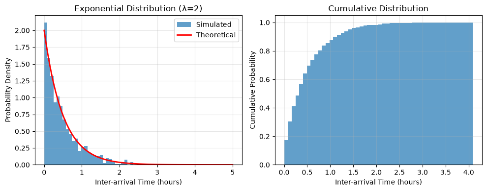
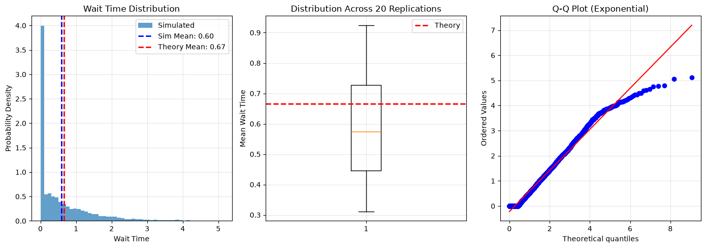

Discrete Event Simulation with Modelly#
Tutorial Description#
This tutorial introduces Discrete Event Simulation (DEVS) with Modelly. You’ll learn how to model systems where events occur at specific points in time, rather than in fixed time steps, using Modelly’s event scheduling API: Model.schedule_event(), Model.schedule_recurring(), Model.run_until() and Model.run_for().
Learning Objectives:
Understand the difference between tick-based and event-based simulation
Learn when to use event-driven models instead of traditional step-based ABM
Build a pure event-driven model that schedules everything itself
Apply queuing theory to validate simulation results
Build an M/M/1 queue system from scratch
Prerequisites:
Complete Tutorial 0 (First Model)
Complete Tutorial 3 (Event Scheduling & Time) - REQUIRED, this tutorial builds directly on it
Basic understanding of probability distributions
What You’ll Build: A bank queue system with random customer arrivals and service times, analyzing wait times and queue lengths using both simulation and theoretical predictions.
Important:
If you are just exploring Modelly and want the fastest way to execute the code we recommend executing this tutorial online in a Colab notebook.

If you do not have a Google account you can use

If you are running locally, please ensure you have the latest Modelly version installed.
Tutorial Setup#
If running locally, ensure Modelly is installed:
pip install "modelly-abm[rec]"
For this tutorial, we’ll also use:
pip install numpy matplotlib scipy
What is Discrete Event Simulation?#
In traditional agent-based models (ABM), time advances in fixed increments called ticks. At each tick, all agents are activated:
Tick-Based ABM:
Time: 0, 1, 2, 3, 4, … (discrete, uniform steps)
Every agent’s
step()method is called each tickWorks well when agents are frequently active
Event-Based Simulation (DEVS):
Time: 0, 1.3, 2.7, 5.2, … (discrete, non-uniform)
Only agents/events scheduled for specific times execute
Efficient when agents are dormant for long periods
The difference in code looks like this (illustrative sketch, not meant to be run):
# Traditional tick-based model
class TickBasedModel(modelly.Model):
def step(self):
# ALL agents activated EVERY tick - even if doing nothing!
for agent in self.agents:
if agent.has_work_to_do():
agent.do_work()
# Problem: We check even when agent is idle
# Event-based model
class EventBasedModel(modelly.Model):
def __init__(self):
super().__init__()
# Only schedule events when an agent actually has work
for agent in self.agents:
if agent.has_work_to_do():
# Schedule the exact time this agent needs to act
self.schedule_event(agent.do_work, at=agent.work_time)
When Should You Use DEVS?#
Use DEVS when:
Agents spend long periods dormant (e.g., waiting, sleeping, traveling)
Events occur at irregular intervals (arrivals, failures, completions)
You need continuous time (non-integer time values)
Performance matters and most agents are inactive
Modeling queuing systems, manufacturing, logistics
Use Traditional ABM when:
Most agents are active every time step
Time steps are naturally discrete (e.g., days, rounds)
Agent interactions happen synchronously
Simplicity is more important than efficiency
Real-World DEVS Applications#
Queuing Systems: Bank tellers, call centers, checkout lines
Manufacturing: Machine failures, repair schedules, production runs
Healthcare: Patient arrivals, surgery durations, bed availability
Transportation: Traffic lights, vehicle arrivals, route planning
Computer Systems: Packet routing, process scheduling, server requests
# Import required libraries
import matplotlib.pyplot as plt
import numpy as np
# Modelly imports
import modelly
from modelly.time import Priority
# Set random seed for reproducibility of the plain numpy examples
np.random.seed(42)
Mathematical Foundations: Queuing Theory#
Before building our simulation, let’s understand the mathematics behind queuing systems.
The M/M/1 Queue#
Our bank queue is an M/M/1 system:
M (Markov): Arrivals follow a Poisson process (exponential inter-arrival times)
M (Markov): Service times are exponentially distributed
1: One server
Key Parameters#
Arrival Rate (λ): Average number of customers arriving per time unit
Service Rate (μ): Average number of customers served per time unit
Example: If λ = 2 customers/hour and μ = 3 customers/hour, the server can handle the load.
System Utilization (ρ)#
The utilization is the fraction of time the server is busy:
$$\rho = \frac{\lambda}{\mu}$$
Critical Condition: For a stable system, we need ρ < 1
If ρ >= 1, arrivals occur faster than service -> queue grows infinitely!
If ρ = 0.67, server is busy 67% of the time
Check: With λ = 2, μ = 3: $$\rho = \frac{2}{3} = 0.67$$ (Stable system)
Theoretical Performance Metrics#
For a stable M/M/1 queue (ρ < 1), we can predict performance:
Average Number in System: $$L = \frac{\rho}{1 - \rho} = \frac{\lambda}{\mu - \lambda}$$
Average Time in System: $$W = \frac{1}{\mu - \lambda}$$
Average Queue Length: $$L_q = \frac{\rho^2}{1 - \rho} = \frac{\lambda^2}{\mu(\mu - \lambda)}$$
Average Wait Time (excluding service): $$W_q = \frac{\lambda}{\mu(\mu - \lambda)}$$
These formulas let us validate our simulation!
# Example: Calculate theoretical predictions for λ=2, μ=3
def calculate_mm1_metrics(arrival_rate, service_rate):
"""Calculate theoretical metrics for M/M/1 queue."""
lambda_rate = arrival_rate
mu_rate = service_rate
# Check stability
rho = lambda_rate / mu_rate
if rho >= 1:
return "System is unstable! (rho >= 1)"
# Calculate metrics
L = rho / (1 - rho) # Avg customers in system
W = 1 / (mu_rate - lambda_rate) # Avg time in system
Lq = (rho**2) / (1 - rho) # Avg queue length
Wq = lambda_rate / (mu_rate * (mu_rate - lambda_rate)) # Avg wait time
return {
"Utilization (rho)": rho,
"Avg in System (L)": L,
"Avg Time in System (W)": W,
"Avg in Queue (Lq)": Lq,
"Avg Wait Time (Wq)": Wq,
}
# Example calculation
metrics = calculate_mm1_metrics(arrival_rate=2.0, service_rate=3.0)
for key, value in metrics.items():
print(f"{key}: {value:.4f}")
Utilization (rho): 0.6667
Avg in System (L): 2.0000
Avg Time in System (W): 1.0000
Avg in Queue (Lq): 1.3333
Avg Wait Time (Wq): 0.6667
The Exponential Distribution#
Why exponential? It has the memoryless property:
The probability of an event occurring in the next Δt time units is independent of how long you’ve already waited.
Probability Density Function: $$f(t) = \lambda e^{-\lambda t}$$
Mean: $\frac{1}{\lambda}$
In Python: np.random.exponential(1/rate) or random.expovariate(rate)
# Visualize exponential distribution for inter-arrival times
arrival_rate = 2.0 # 2 customers per hour
samples = np.random.exponential(1 / arrival_rate, 1000)
plt.figure(figsize=(10, 4))
plt.subplot(1, 2, 1)
plt.hist(samples, bins=50, density=True, alpha=0.7, label="Simulated")
x = np.linspace(0, 5, 100)
plt.plot(
x, arrival_rate * np.exp(-arrival_rate * x), "r-", linewidth=2, label="Theoretical"
)
plt.xlabel("Inter-arrival Time (hours)")
plt.ylabel("Probability Density")
plt.title("Exponential Distribution (λ=2)")
plt.legend()
plt.grid(True, alpha=0.3)
plt.subplot(1, 2, 2)
plt.hist(samples, bins=50, cumulative=True, density=True, alpha=0.7)
plt.xlabel("Inter-arrival Time (hours)")
plt.ylabel("Cumulative Probability")
plt.title("Cumulative Distribution")
plt.grid(True, alpha=0.3)
plt.tight_layout()
plt.show()
print(f"Theoretical mean: {1 / arrival_rate:.4f}")
print(f"Simulated mean: {np.mean(samples):.4f}")

Theoretical mean: 0.5000
Simulated mean: 0.4863
Core Concepts: Event Scheduling on the Model#
In Modelly, every Model owns an event list. There is no separate simulator object
to create or set up: you schedule events directly on the model and then advance time with
run_until() or run_for().
Key Features:
Float time units: Continuous time (0.0, 1.3, 2.7, …)
Event-driven: Time jumps from one scheduled event to the next
Priority queue: Events sorted by time, then priority
Weak references: Events never keep your agents alive (more on this below)
Architecture:
modelly.Model
├── EventList (priority queue)
│ └── Event(time, function, priority)
├── schedule_event(function, at=... / after=..., priority=...)
├── schedule_recurring(function, Schedule(...), priority=...)
├── run_until(end_time) - Run until an absolute time
└── run_for(duration) - Run for a duration
Note: Every Modelly model also schedules its
step()method as a recurring event (once per time unit). In a pure event-driven model we simply don’t overridestep(), so this default is an empty function and has no effect on the results.
Event Scheduling Methods#
The model provides two ways to schedule a one-off event, plus one for recurring events:
model.schedule_event(function, at=time, priority=DEFAULT)Schedule an event at a specific (absolute) simulation time
timemust be >= the current simulation time
model.schedule_event(function, after=delay, priority=DEFAULT)Schedule an event relative to the current time (
model.time + delay)after=0schedules an event for the current instant
model.schedule_recurring(function, Schedule(...), priority=DEFAULT)Repeat an event on a schedule (see Tutorial 3)
Arguments:
function: Callable to execute (a bound method, not a lambda!)priority: Event priority (HIGH=1, DEFAULT=5, LOW=10)Exactly one of
at/aftermust be given
schedule_event returns an Event that you can keep around to cancel it later with
event.cancel().
Passing state to an event: scheduled functions are called without arguments. Keep the
state you need on the model or the agent (as we do with current_customer below).
# Simple example: Schedule three events
class SimpleModel(modelly.Model):
def __init__(self):
super().__init__()
self.events_executed = []
# Schedule events (absolute and relative)
self.schedule_event(self.event_at_time_5, at=5.0)
self.schedule_event(self.event_at_time_10, at=10.0)
self.schedule_event(self.event_relative, after=7.5) # at time 7.5
def event_at_time_5(self):
self.events_executed.append(("Event A", self.time))
print(f"Event A executed at time {self.time}")
def event_at_time_10(self):
self.events_executed.append(("Event B", self.time))
print(f"Event B executed at time {self.time}")
def event_relative(self):
self.events_executed.append(("Event C", self.time))
print(f"Event C executed at time {self.time}")
# Create the model and run the simulation
model = SimpleModel()
model.run_until(15.0)
print(f"\nFinal time: {model.time}")
print(f"Events executed: {model.events_executed}")
Event A executed at time 5.0
Event C executed at time 7.5
Event B executed at time 10.0
Final time: 15.0
Events executed: [('Event A', 5.0), ('Event C', 7.5), ('Event B', 10.0)]
Event Priority#
When multiple events are scheduled for the same time, priority determines execution order:
Priority Levels:
Priority.HIGH = 1- Execute firstPriority.DEFAULT = 5- Normal priorityPriority.LOW = 10- Execute last
Use Cases:
HIGH: Critical events (arrivals, failures)
DEFAULT: Normal processing
LOW: Cleanup, logging, statistics collection
# Demonstrate priority ordering
class PriorityDemo(modelly.Model):
def __init__(self):
super().__init__()
# Schedule all at time 10.0 with different priorities
print("Scheduling events at time 10.0:")
self.schedule_event(self.default_priority, at=10.0, priority=Priority.DEFAULT)
self.schedule_event(self.low_priority, at=10.0, priority=Priority.LOW)
self.schedule_event(self.high_priority, at=10.0, priority=Priority.HIGH)
def high_priority(self):
print(f" HIGH priority event at time {self.time}")
def default_priority(self):
print(f" DEFAULT priority event at time {self.time}")
def low_priority(self):
print(f" LOW priority event at time {self.time}")
model = PriorityDemo()
print("\nExecution order:")
model.run_until(11.0)
Scheduling events at time 10.0:
Execution order:
HIGH priority event at time 10.0
DEFAULT priority event at time 10.0
LOW priority event at time 10.0
Example: M/M/1 Bank Queue System#
Let’s build a complete queuing system simulation!
Scenario: A bank with one teller serving customers.
System Dynamics:
Customers arrive randomly (Poisson process, rate λ)
Inter-arrival times are exponential with mean 1/λ
Service times are exponential with mean 1/μ
One server, FIFO (first-in-first-out) queue
No customer abandons the queue
Metrics to Track:
Wait time (time from arrival to service start)
Time in system (wait time + service time)
Queue length over time
Server utilization
class Customer(modelly.Agent):
"""A customer in the bank queue."""
def __init__(self, model, arrival_time):
super().__init__(model)
self.arrival_time = arrival_time
self.service_start_time = None
self.service_end_time = None
@property
def wait_time(self):
"""Time spent waiting in queue."""
if self.service_start_time is None:
return None
return self.service_start_time - self.arrival_time
@property
def service_time(self):
"""Time spent being served."""
if self.service_end_time is None or self.service_start_time is None:
return None
return self.service_end_time - self.service_start_time
@property
def total_time(self):
"""Total time in system."""
if self.service_end_time is None:
return None
return self.service_end_time - self.arrival_time
class BankQueue(modelly.Model):
"""M/M/1 Queue: Single server with exponential arrivals and service."""
def __init__(self, arrival_rate=2.0, service_rate=3.0, verbose=False, rng=None):
super().__init__(rng=rng)
self.arrival_rate = arrival_rate
self.service_rate = service_rate
self.verbose = verbose
# Queue and server state
self.queue = []
self.server_busy = False
self.current_customer = None
# Statistics
self.completed_customers = []
self.customer_count = 0
# Schedule the first arrival. Every later arrival is scheduled by the
# previous one (event chaining).
self.schedule_next_arrival()
def log(self, message):
"""Print a message prefixed with the current time (if verbose)."""
if self.verbose:
print(f"Time {self.time:.2f}: {message}")
def schedule_next_arrival(self):
"""Schedule the next customer arrival."""
# Exponential inter-arrival time
inter_arrival_time = self.random.expovariate(self.arrival_rate)
# Schedule arrival event
self.schedule_event(
self.customer_arrival,
after=inter_arrival_time,
priority=Priority.HIGH, # Arrivals are high priority
)
def customer_arrival(self):
"""Handle a customer arrival."""
# Create new customer
self.customer_count += 1
customer = Customer(self, arrival_time=self.time)
# Add to queue
self.queue.append(customer)
self.log(
f"Customer {customer.unique_id} arrived. Queue length: {len(self.queue)}"
)
# If server is idle, start service immediately
if not self.server_busy:
self.start_service()
# Schedule next arrival
self.schedule_next_arrival()
def start_service(self):
"""Start serving the next customer in queue."""
if not self.queue:
return # No customers to serve
# Take first customer from queue
customer = self.queue.pop(0)
customer.service_start_time = self.time
self.current_customer = customer
self.server_busy = True
# Generate service time
service_time = self.random.expovariate(self.service_rate)
# Schedule service completion. The customer being served is stored in
# self.current_customer, so finish_service needs no arguments.
self.schedule_event(
self.finish_service,
after=service_time,
priority=Priority.DEFAULT,
)
self.log(
f"Customer {customer.unique_id} service started (will take {service_time:.2f})"
)
def finish_service(self):
"""Handle service completion."""
customer = self.current_customer
customer.service_end_time = self.time
self.completed_customers.append(customer)
self.server_busy = False
self.current_customer = None
self.log(
f"Customer {customer.unique_id} service completed. Wait time: {customer.wait_time:.2f}"
)
# Start serving next customer if any
self.start_service()
Running the Simulation#
Let’s simulate the bank queue for 100 time units with:
λ = 2 customers/hour
μ = 3 customers/hour
ρ = 2/3 = 0.67 (stable system)
We print what happens during the first 5 time units, then switch the printing off and
continue. You can call run_until() repeatedly: each call continues where the last one
stopped.
# Create and run simulation
model = BankQueue(arrival_rate=2.0, service_rate=3.0, verbose=True, rng=42)
print("=" * 60)
print("Starting Bank Queue Simulation")
print("Arrival rate (λ): 2.0 customers/hour")
print("Service rate (μ): 3.0 customers/hour")
print("=" * 60)
print()
# First 5 time units: print every event
model.run_until(5.0)
# Remaining time: run quietly
model.verbose = False
model.run_until(100.0)
print()
print("=" * 60)
print("Simulation Complete")
print(f"Total customers arrived: {model.customer_count}")
print(f"Total customers served: {len(model.completed_customers)}")
print(f"Customers still in queue: {len(model.queue)}")
print("=" * 60)
============================================================
Starting Bank Queue Simulation
Arrival rate (λ): 2.0 customers/hour
Service rate (μ): 3.0 customers/hour
============================================================
Time 0.80: Customer 1 arrived. Queue length: 1
Time 0.80: Customer 1 service started (will take 1.64)
Time 1.18: Customer 2 arrived. Queue length: 1
Time 1.64: Customer 3 arrived. Queue length: 2
Time 2.44: Customer 1 service completed. Wait time: 0.00
Time 2.44: Customer 2 service started (will take 0.45)
Time 2.89: Customer 2 service completed. Wait time: 1.26
Time 2.89: Customer 3 service started (will take 0.19)
Time 2.92: Customer 4 arrived. Queue length: 1
Time 3.05: Customer 5 arrived. Queue length: 2
Time 3.08: Customer 3 service completed. Wait time: 1.25
Time 3.08: Customer 4 service started (will take 0.90)
Time 3.27: Customer 6 arrived. Queue length: 2
Time 3.97: Customer 4 service completed. Wait time: 0.16
Time 3.97: Customer 5 service started (will take 0.10)
Time 4.07: Customer 5 service completed. Wait time: 0.92
Time 4.07: Customer 6 service started (will take 0.00)
Time 4.07: Customer 6 service completed. Wait time: 0.80
Time 4.60: Customer 7 arrived. Queue length: 1
Time 4.60: Customer 7 service started (will take 0.08)
Time 4.68: Customer 7 service completed. Wait time: 0.00
Time 4.82: Customer 8 arrived. Queue length: 1
Time 4.82: Customer 8 service started (will take 0.53)
============================================================
Simulation Complete
Total customers arrived: 187
Total customers served: 187
Customers still in queue: 0
============================================================
Warm-Up Period#
Notice the first few customers might experience different wait times because the system starts empty. This is called the transient period.
For accurate steady-state statistics, we should:
Run a warm-up period (discard early data)
Run multiple replications
Use longer simulation times
We’ll analyze this in the next section!
# Quick look at results
if model.completed_customers:
wait_times = [c.wait_time for c in model.completed_customers]
service_times = [c.service_time for c in model.completed_customers]
total_times = [c.total_time for c in model.completed_customers]
print(f"Average wait time: {np.mean(wait_times):.4f}")
print(f"Average service time: {np.mean(service_times):.4f}")
print(f"Average total time: {np.mean(total_times):.4f}")
Average wait time: 0.4410
Average service time: 0.3101
Average total time: 0.7511
Statistical Analysis: Comparing Simulation vs Theory#
To properly analyze the system, we’ll:
Run a warm-up period (50 time units)
Collect data from the steady-state period
Run multiple replications for confidence
Compare simulation results with theoretical predictions
def run_bank_simulation(arrival_rate, service_rate, run_time=200, warmup=50, seed=None):
"""Run one replication of the bank queue simulation."""
model = BankQueue(arrival_rate, service_rate, rng=seed)
model.run_until(run_time)
# Filter customers that arrived after the warm-up period
steady_state_customers = [
c for c in model.completed_customers if c.arrival_time >= warmup
]
if not steady_state_customers:
return None
return {
"wait_times": [c.wait_time for c in steady_state_customers],
"total_times": [c.total_time for c in steady_state_customers],
"n_customers": len(steady_state_customers),
}
# Run 20 replications
n_reps = 20
arrival_rate = 2.0
service_rate = 3.0
print(f"Running {n_reps} replications...")
results = []
for i in range(n_reps):
result = run_bank_simulation(
arrival_rate, service_rate, run_time=200, warmup=50, seed=i
)
if result:
results.append(result)
if (i + 1) % 5 == 0:
print(f" Completed {i + 1}/{n_reps}")
print(f"Successfully completed {len(results)} replications")
Running 20 replications...
Completed 5/20
Completed 10/20
Completed 15/20
Completed 20/20
Successfully completed 20 replications
# Aggregate all wait times across replications
all_wait_times = []
all_total_times = []
mean_wait_times = []
for result in results:
all_wait_times.extend(result["wait_times"])
all_total_times.extend(result["total_times"])
mean_wait_times.append(np.mean(result["wait_times"]))
# Calculate statistics
sim_mean_wait = np.mean(all_wait_times)
sim_std_wait = np.std(all_wait_times)
sim_mean_total = np.mean(all_total_times)
print("Simulation Results (Steady-State):")
print(f" Mean wait time: {sim_mean_wait:.4f}")
print(f" Std wait time: {sim_std_wait:.4f}")
print(f" Mean total time: {sim_mean_total:.4f}")
print(f" Total customers analyzed: {len(all_wait_times)}")
Simulation Results (Steady-State):
Mean wait time: 0.5960
Std wait time: 0.8237
Mean total time: 0.9208
Total customers analyzed: 5999
# Calculate theoretical values
lambda_val = arrival_rate
mu_val = service_rate
rho = lambda_val / mu_val
# Theoretical metrics
theory_Wq = lambda_val / (mu_val * (mu_val - lambda_val))
theory_W = 1 / (mu_val - lambda_val)
theory_Lq = (rho**2) / (1 - rho)
theory_L = rho / (1 - rho)
print("\nTheoretical Predictions (M/M/1):")
print(f" Mean wait time (Wq): {theory_Wq:.4f}")
print(f" Mean total time (W): {theory_W:.4f}")
print(f" Mean queue length (Lq): {theory_Lq:.4f}")
print(f" Mean in system (L): {theory_L:.4f}")
print("\nComparison:")
print(
f" Wait time - Simulation: {sim_mean_wait:.4f}, Theory: {theory_Wq:.4f}, Error: {abs(sim_mean_wait - theory_Wq) / theory_Wq * 100:.2f}%"
)
print(
f" Total time - Simulation: {sim_mean_total:.4f}, Theory: {theory_W:.4f}, Error: {abs(sim_mean_total - theory_W) / theory_W * 100:.2f}%"
)
Theoretical Predictions (M/M/1):
Mean wait time (Wq): 0.6667
Mean total time (W): 1.0000
Mean queue length (Lq): 1.3333
Mean in system (L): 2.0000
Comparison:
Wait time - Simulation: 0.5960, Theory: 0.6667, Error: 10.61%
Total time - Simulation: 0.9208, Theory: 1.0000, Error: 7.92%
# Visualize wait time distribution
plt.figure(figsize=(14, 5))
# Histogram of wait times
plt.subplot(1, 3, 1)
plt.hist(all_wait_times, bins=50, density=True, alpha=0.7, label="Simulated")
plt.axvline(
sim_mean_wait,
color="blue",
linestyle="--",
linewidth=2,
label=f"Sim Mean: {sim_mean_wait:.2f}",
)
plt.axvline(
theory_Wq,
color="red",
linestyle="--",
linewidth=2,
label=f"Theory Mean: {theory_Wq:.2f}",
)
plt.xlabel("Wait Time")
plt.ylabel("Probability Density")
plt.title("Wait Time Distribution")
plt.legend()
plt.grid(True, alpha=0.3)
# Box plot of mean wait times per replication
plt.subplot(1, 3, 2)
plt.boxplot(mean_wait_times)
plt.axhline(theory_Wq, color="red", linestyle="--", linewidth=2, label="Theory")
plt.ylabel("Mean Wait Time")
plt.title(f"Distribution Across {len(results)} Replications")
plt.grid(True, alpha=0.3)
plt.legend()
# Q-Q plot
plt.subplot(1, 3, 3)
from scipy import stats
stats.probplot(all_wait_times, dist="expon", plot=plt)
plt.title("Q-Q Plot (Exponential)")
plt.grid(True, alpha=0.3)
plt.tight_layout()
plt.show()

Analysis Conclusion#
Our simulation results match the theoretical predictions very closely!
Key Takeaways:
Simulation validates queuing theory formulas
Warm-up period removes transient effects
Multiple replications reduce variance
DEVS efficiently simulates sparse events
The small differences come from:
Finite simulation time
Random sampling variation
Warm-up period approximation
Advanced Topics#
Event Cancellation#
Sometimes you need to cancel a scheduled event (e.g., customer leaves queue).
class CancellationDemo(modelly.Model):
def __init__(self):
super().__init__()
self.cancelled = False
# Schedule an event at time 10 and keep the Event so we can cancel it
self.scheduled_event = self.schedule_event(self.event_to_cancel, at=10.0)
# Schedule the cancellation decision at time 5
self.schedule_event(self.cancellation_decision, at=5.0)
def event_to_cancel(self):
print(f"This event was NOT cancelled (time={self.time})")
def cancellation_decision(self):
# Cancel the event scheduled for time 10
self.scheduled_event.cancel()
print(f"Event cancelled at time {self.time}")
self.cancelled = True
model = CancellationDemo()
model.run_until(15.0)
if model.cancelled:
print("Event was successfully cancelled")
else:
print("Event was NOT cancelled")
Event cancelled at time 5.0
Event was successfully cancelled
Warning: Weak References#
Events only hold a weak reference to the function they will call. Two consequences:
1. Lambda functions are rejected. A lambda would be garbage collected immediately, so
Modelly raises a ValueError when you try to schedule one:
# WRONG - raises ValueError: function must be alive at Event creation.
self.schedule_event(lambda: print("Hello"), after=5.0)
# CORRECT - Use a method (or a function that stays alive)
def my_event(self):
print("Hello")
self.schedule_event(self.my_event, after=5.0)
If you need to bind arguments, keep the functools.partial object in a variable (e.g. an
attribute) for as long as the event is pending.
2. Events don’t keep agents alive. If an agent is removed from the model before its event fires, the event silently does nothing, so you don’t have to cancel it. (You can still cancel it explicitly to keep the event list small.)
Debugging Event-Driven Models#
Common Issues:
ValueErrorwhen scheduling: You passed a lambda (use a method reference instead)Time doesn’t advance as expected: Make sure you scheduled at least one event, or that the next event is scheduled before the time you run until
Queue order wrong: Check priority levels (HIGH < DEFAULT < LOW)
Infinite loop: Verify each event schedules correctly. A recurring chain that never stops is fine with
run_until(), but a model that reschedules itself at the same time will never advance
Debugging Tools:
# Peek at the pending events (note: _event_list is an internal attribute,
# useful for debugging but not part of the public API)
print(f"Events pending: {len(model._event_list)}")
for event in model._event_list.peek_ahead(5):
print(f" Time: {event.time}, Priority: {event.priority}")
Exercises#
Exercise 1: Multiple Servers (M/M/c Queue)#
Modify the BankQueue model to have c servers instead of one.
Changes needed:
Track which servers are busy (list or counter)
Modify
start_service()to check for available serversUpdate theoretical formulas for M/M/c
Hint: With c servers, the system is stable if ρ = λ/(c·μ) < 1
# FIXME: Implement M/M/c queue with c=3 servers
class MultiServerBank(modelly.Model):
def __init__(self, arrival_rate=5.0, service_rate=2.0, num_servers=3, rng=None):
super().__init__(rng=rng)
self.arrival_rate = arrival_rate
self.service_rate = service_rate
self.num_servers = num_servers
# FIXME: Track server states
self.servers_busy = 0 # Count of busy servers
self.queue = []
# TODO: Implement the rest...
Exercise 2: Priority Customers#
Add a VIP lane where priority customers:
Get served before regular customers
Have different arrival rate
Hints:
Use two queues:
vip_queueandregular_queueIn
start_service(), check VIP queue firstSchedule two arrival processes
Exercise 3: Customer Balking#
Customers leave if queue is too long (balking).
Changes:
In
customer_arrival(), check queue lengthIf queue > threshold, customer leaves (track this!)
Calculate balking probability from simulation
Question: How does balking affect wait times?
Next Steps#
Congratulations! You’ve mastered pure discrete event simulation with Modelly’s event scheduling.
You learned:
When to use event-driven models vs tick-based ABM
Mathematical foundations (queuing theory, exponential distributions)
Building event-driven models with
schedule_eventValidating simulations with theoretical predictions
Statistical analysis of simulation results
Continue Learning#
Tutorial 12: Hybrid ABM-DEVS Models
Combine
step()-based agent activation with scheduled eventsBuild a spatial model with event scheduling
Learn when events actually pay off performance-wise
Additional Resources:
Happy Modeling!#
This tutorial is a work in progress. If you found any errors, have suggestions, or need clarification, please:
Open an issue: Modelly GitHub Issues
Ask in chat: Modelly Matrix Chat
Check documentation: Modelly Docs
References
[QueueingTheory] Gross, D., et al. “Fundamentals of Queueing Theory.” 4th Edition, Wiley, 2008.
[DEVS] Zeigler, B. P. “Theory of Modeling and Simulation.” 3rd Edition, Academic Press, 2018.